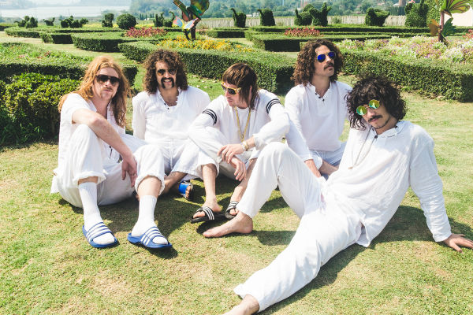
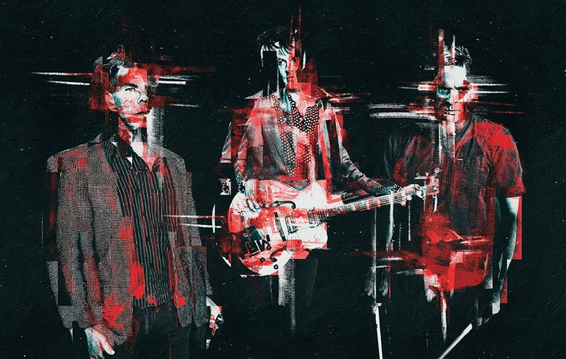

HIGH ROTATIONS
REVIEWS
LATEST
IN DEPTH
HIGH ROTATION
ABOUT
The Strokes are back with new EP 'Future Present Past'
27 May 2016
Radiohead announce ninth album with new song
Daydreaming
7 May 2016
Dune Rats blast away the bullshit with their new single
6 May 2016
The Gooch Palms cause more trouble on new single
Ask Me Why
5 May 2016
The Creases share new single
Impact
5 May 2016
Radiohead return with new single
Burn The Witch
4 May 2016
Paul Dempsey shares sprawling new single
The True Sea
15 April 2016
Stonefield are back with lead single
Stranger
15 April 2016
The Splendour In The Grass lineup is here!
13 April 2016
Elecho Plant debut with first ever single
Moving
7 April 2016
The Vines are back with new song
In Miracle Land
1 April 2016
Hockey Dad announce debut album with first single
So Tired
1 April 2016
Paul Dempsey announces brand new solo album 'Strange Loop'
1 April 2016
GUM's
Anesthetized Lesson
is remixed by bandmate Kevin Parker
30 March 2016
Catfish And The Bottlemen announce sophomore album 'The Ride'
23 March 2016

Sticky Fingers are back in style with swaggering new single
Outcast At Last
22 March 2016
Thom Yorke teams up with Mark Pritchard on new song
Beautiful People
22 March 2016

The Living End announce a triple threat: new album, new single, new tour
21 March 2016
Remi drops new single
For Good
with a corresponding national tour
15 March 2016
The Living End have hit the ground running with their new song
Monkey
15 March 2016
The Blurst Of Times Festival is back with a stellar lineup
14 March 2016
King Gizzard & The Lizard Wizard announce new album with
Gamma Knife
9 March 2016
Luca Brasi share third single
Anything Near Conviction
from forthcoming LP
7 March 2016